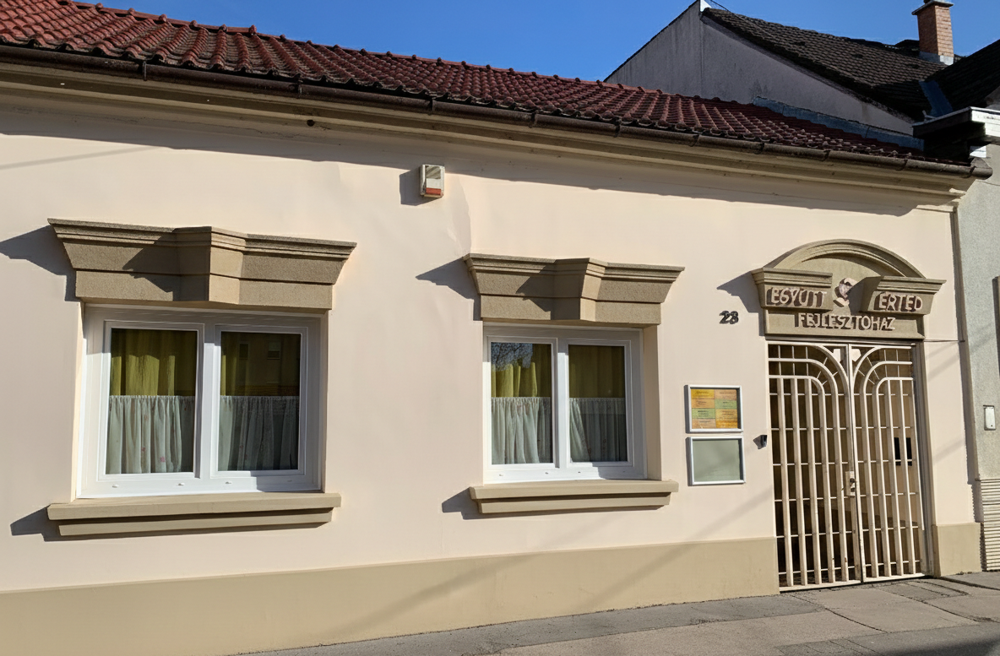
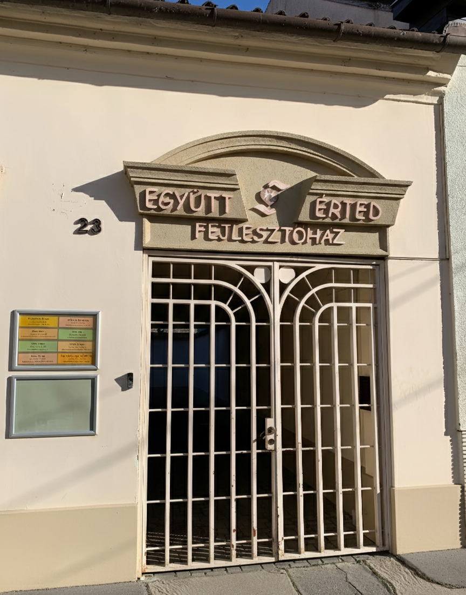
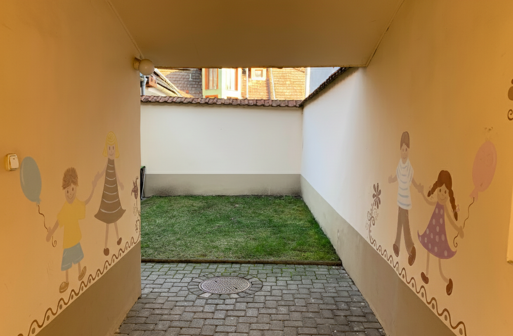
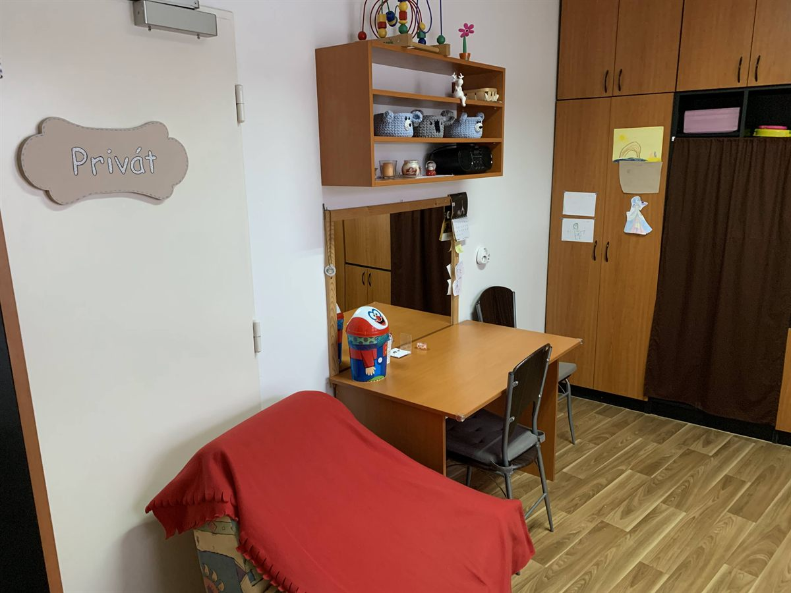
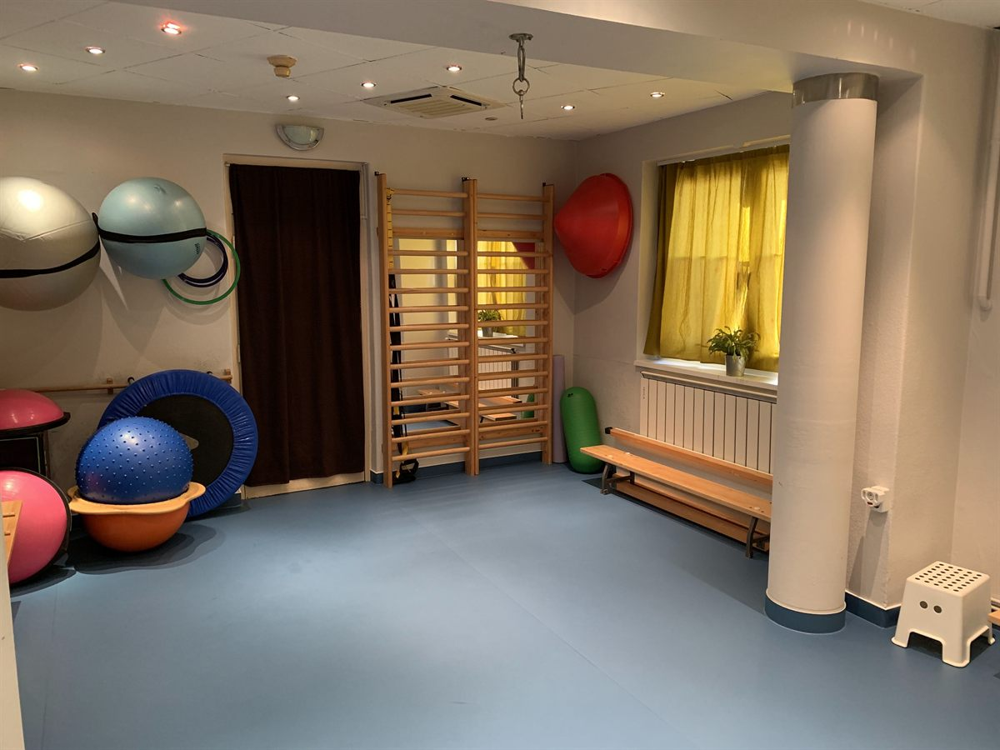

DSZIT
Dinamikus Szenzoros Integrációs Terápia – szenzoros feldolgozás és mozgáskoordináció fejlesztése.
RészletekFejlesztőház
Szakszerű fejlesztés, szeretettel – Vácon. A fejlődéshez kinek több, kinek kevesebb segítségre van szüksége. Szeretnénk, hogy ez a segítség elérhető legyen.

Komplex fejlesztési programjainkkal minden gyermek számára megtaláljuk a legmegfelelőbb terápiát.
Dinamikus Szenzoros Integrációs Terápia – szenzoros feldolgozás és mozgáskoordináció fejlesztése.
RészletekMozgásfejlesztésen alapuló idegrendszer fejlesztő terápia 5-16 éves gyermekeknek.
RészletekPető-módszer központi idegrendszer károsodás kezelésére minden korosztálynak.
RészletekGerinc és mozgásszervi elváltozások kezelése gyermekeknek és felnőtteknek.
Részletek0-6 éves gyermekek komplex gyógypedagógiai fejlesztése, kihasználva az agyi plaszticitás legszenzitívebb időszakát.
RészletekBeszéd- és nyelvi fejlődési zavarok kezelése, artikulációs problémák, megkésett beszédfejlődés terápiája.
RészletekA zene gyógyító erejével segítjük a kommunikációt, kapcsolatteremtést és önkifejezést.
RészletekVálassza ki a gyermekénél tapasztalt jellemzőket, és megmutatjuk az ajánlott szolgáltatásokat.
Megkésett mérföldkövek, izomtónus eltérések, motoros ügyetlenség, koordinációs nehézségek.
Kevés szó, nehezen érthetőség, kiejtési problémák, pöszeség, dadogás, selypesség.
Nehézségek a koncentrációval, impulzivitás, túlmozgékonyság, figyelem könnyen elterelődik.
Diszlexia, diszgráfia jelei, olvasási és írási nehézségek, iskolai teljesítményproblémák.
Érzékenység zajra vagy érintésre, csetlő-botló mozgás, nehezen alkalmazkodik új helyzetekhez.
Gerincferdülés, tartási rendellenességek, láb- és kardeformitások, rossz testtartás.
Tapasztalt és elkötelezett szakértőink szeretettel várják gyermekét.

Korai fejlesztő, Gyógypedagógus
A 0-6 éves gyermekek komplex gyógypedagógiai fejlesztésével foglalkozik, kihasználva az agyi plaszticitás legszenzitívebb időszakát.
Mozgás- és táncterápiás szakember
A DSZIT terápia egyik vezető terapeutája, a mozgás és szenzoros integráció kombinálásával segíti a gyermekek fejlődését.

Gyógytestnevelő tanár
A gerinc és mozgásszervi elváltozások kezelésével foglalkozik, segítve a gyermekeket és felnőtteket egyaránt.
Konduktor, Mozgásfejlesztő
Komplex mozgásfejlesztési megközelítést alkalmaz: konduktív pedagógia, alapozó terápia és DSZIT kombinálása.
Zeneterapeuta
A zene gyógyító erejét használja fel a gyermekek fejlesztésében, segítve a kommunikációt és érzelmi szabályozást.
Logopédus, Gyógypedagógus
A beszéd- és nyelvi fejlődés zavarainak kezelésével foglalkozik, segítve a megkésett beszédfejlődésű gyermekeket.
DSZIT terapeuta
A Dinamikus Szenzoros Integrációs Terápia szakembere, örömteli játéktevékenységgel segíti a gyermekeket.
2013 óta segítjük Vác és környéke családjait. Fedezze fel fejlesztőházunkat!




A fejlesztőházat 2013-ban alapította Baloghné Tóth Katalin és Balogh Péter, akiknek kislányuk fejlődési kihívásokkal született. Küldetésünk, hogy a specializált terápiák elérhetők legyenek helyben, ne kelljen minden foglalkozásért Budapestre utazni.
"Vácon, a jövő nemzedékéért..."
Keressen minket bizalommal! Készséggel válaszolunk kérdéseire.